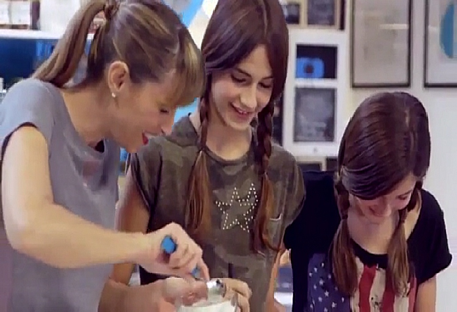
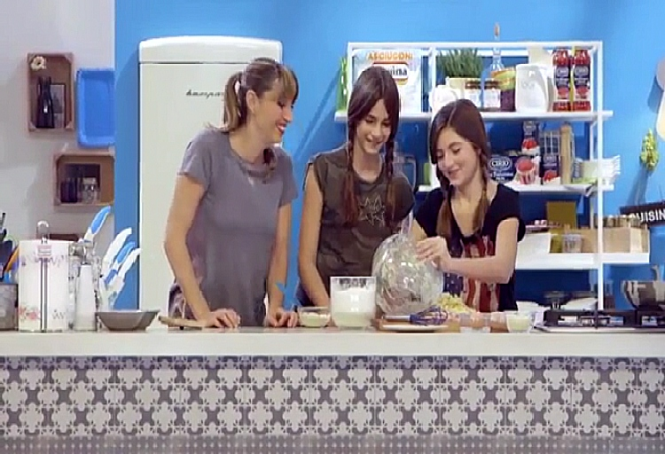

Torna indietro
Torna indietro
Le nostre alunne Matilde e Allegra sono state ospiti della trasmissione di Benedetta Parodi. Qui hanno presentato la ricetta per preparare le polpette malline, una loro personale creazione per recuperare il riso avanzato la sera prima.
 Il video completo è disponibile qui.